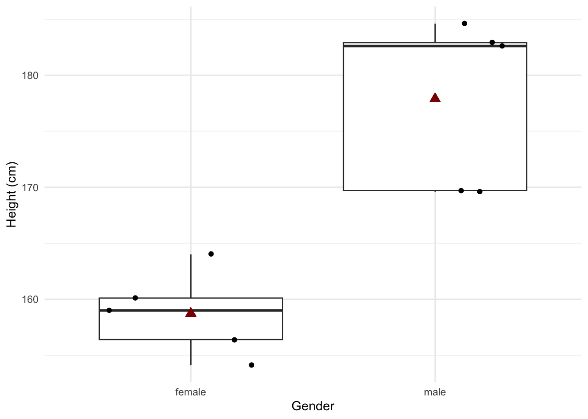
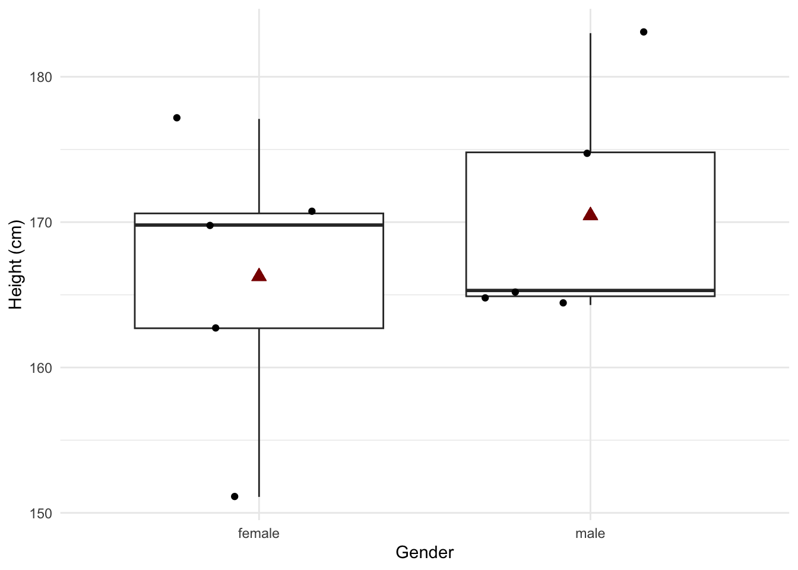
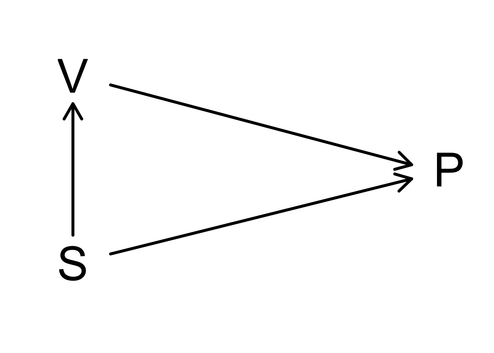

1. Introduction: Why do we need statistics
statOmics, Ghent University (https://statomics.github.io)
1 Motivation


- We live in a big data era
- Data on location, clicks, e-commerce, social media …
- Life Sciences: measure expression of thousands of genes, proteins, … for each subject or even individual cells
- Data driven journalism
- …
Statistics is the science to learn from empirical data.
Statistical literacy is key to interpret results from scientific publications.
2 Learning objectives
- In this introduction you will familiarize yourself with three important tasks of statistics
- Experimental design
- Data Exploration
- Estimation and statistical inference
You understand how the data, the estimated mean, standard deviation and conclusions of a statistical data analysis can change from experiment to experiment
You have notice on how
- statistical tests can control for false positives
- the power to pick up an effect depends on the sample size
You can explain the importance of using a good control
You can explain what confounding is
3 Smelly armpit example
Smelly armpits are not caused by sweat itself. The smell is caused by specific micro-organisms belonging to the group of Corynebacterium spp. that metabolise sweat. Another group of abundant bacteria are the Staphylococcus spp., these bacteria do not metabolise sweat in smelly compounds.
The CMET-groep at Ghent University does research on transplanting the armpit microbiome to save people with smelly armpits.
Proposed Therapy:
- Remove armpit-microbiome with antibiotics
- Influence armpit microbiome with microbial transplant (https://youtu.be/9RIFyqLXdVw)
Experiment:
- 20 subjects with smelly armpits are attributed to one of two treatment groups
- placebo (only antibiotics)
- transplant (antibiotics followed by microbial transplant).
- The microbiome is sampled 6 weeks upon the treatment.
- The relative abundance of Staphylococcus spp. on Corynebacterium spp. + Staphylococcus spp. in the microbiome is measured via DGGE (Denaturing Gradient Gel Electrophoresis).
3.1 Import the data
Code
read_lines("https://raw.githubusercontent.com/GTPB/PSLS20/master/data/armpit.csv") [1] "trt,rel" "placebo,54.99207606973059"
[3] "placebo,31.84466019417476" "placebo,41.09947643979057"
[5] "placebo,59.52063914780293" "placebo,63.573407202216075"
[7] "placebo,41.48648648648649" "placebo,30.44041450777202"
[9] "placebo,42.95676429567643" "placebo,41.7391304347826"
[11] "placebo,33.896515311510036" "transplant,57.218124341412015"
[13] "transplant,72.50900360144058" "transplant,61.89258312020461"
[15] "transplant,56.690140845070424" "transplant,76"
[17] "transplant,71.7357910906298" "transplant,57.757296466973884"
[19] "transplant,65.1219512195122" "transplant,67.53424657534246"
[21] "transplant,77.55359394703657" The file is comma separated and in tidy format
Code
ap <- read_csv("https://raw.githubusercontent.com/GTPB/PSLS20/master/data/armpit.csv")
ap3.2 Data Exploration and Descriptive Statistics
- Data exploration is extremely important to get insight in the data.
- It is often underrated and overlooked.
3.2.1 Descriptive statistics
We first summarize the data and calculate the mean, standard deviation, number of observations and standard error and store the result in an object apRelSum via apRelSum<-
- We pipe the
apdataframe to the group_by function to group the data by treatment trtgroup_by(trt) - We pipe the result to the
summarizefunction to summarize the “rel” variable and calculate the mean, standard deviation and the number of observations - We pipe the result to the
mutatefunction to make a new variable in the data framesefor which we calculate the standard error
Code
apRelSum <- ap |>
group_by(trt) |>
summarize(
mean = mean(rel, na.rm = TRUE),
sd = sd(rel, na.rm = TRUE),
n = n()
) |>
mutate(se = sd / sqrt(n))
apRelSum3.2.2 Plots
We will use ggplot2 to make our plots. With the ggplot2 library we can easily build plots by adding layers.
3.2.2.1 barplot
We pipe our summarized data to the
ggplotfunction and we select the treatment variable trt and the variable mean for plottingaes(x=trt,y=mean)We make a barplot based on this data using the
geom_barfunction. The statistic isstat="identity"because the bar height should be equal the value for the mean of the relative abundance.
Code
apRelSum |>
ggplot(aes(x = trt, y = mean)) +
geom_bar(stat = "identity")
- Is this plot informative??
We will now add standard errors to the plot using geom_errorbar function and specify the minimum and maximum value for of the error bar, the width command is used to set the width of the error bar smaller than the width of the bar.
Code
apRelSum |>
ggplot(aes(x = trt, y = mean)) +
geom_bar(stat = "identity") +
geom_errorbar(aes(ymin = mean - se, ymax = mean + se), width = .2)
- Is this plot informative??
3.2.2.2 boxplots
I consider barplots to be bad plots
- They are not informative
- They just visualize a two point summary of the data. It is better to do this in a table
- They use a lot of space (e.g. from zero up to the minimum relative abundance) where no data are present.
It is better to get a view on the distribution of the data. We can use a boxplot for this purpose. We first explain what a boxplot.

We will now make a boxplot for the ap data
- We pipe the
apdataframe to the ggplot command - We select the data with the command
ggplot(aes(x=trt,y=rel)) - We add a boxplot with the command
geom_boxplot()
Code
ap |>
ggplot(aes(x = trt, y = rel)) +
geom_boxplot()
Note, that we do not have so many observations.
It is always better to show the data as raw as possible!
We will now add the raw data to the plot.
- Note that we set the outlier.shape=NA in the geom_boxplot function because because we will add all raw data anyway.
- We add the raw data using
geom_point(position="jitter"), with the argument position=‘jitter’ we will add some random noise to the x coordinate so that we can see all data.
Code
ap |>
ggplot(aes(x = trt, y = rel)) +
geom_boxplot(outlier.shape = NA) +
geom_point(position = "jitter")
This is an informative plot!
We observed an effect of the transplantation on the relatieve abundantie of Staphylococcus.
Is that effect large enough to conclude that the treatment works?
3.3 Estimation and statistical inference
Induction: With statistical inference we can generalize what we observe in the sample towards the population.
The price that we have to pay: uncertainty on our conclusions!
With data we cannot prove that the treatment works
Falsification principle of Popper: With data we can only reject a hypothesis or theory.
With stats we can thus not prove that the treatment works.
But stats will allow us to falcify the opposite hypothesis: how much evidence is there in the data against the assumption that there is no effect of the treatment?
With stats we can calculate how likely it is to draw a random sample (when you would repeat the experiment) with a mean difference in relative abundance between transplant and placebo group that is at least as large as what we observed in our sample when there would be no effect of the treatment.
This probability is called a p-value.
If p is very small, it is very unlikely to observe a sample like ours by random change when there would be no effect of the treatment.
We typically compare p with 5%. If there is no effect of the treatment we will thus tolerate a probability of 5% on a false positive conclusion.
To calculate p we will have to model the data using statistical models.
In chapter 5 we will learn that we can use a two-sample t-test to generalise what we observe in the microbiome dataset towards the population.
Code
t.test(rel ~ trt, data = ap)
Welch Two Sample t-test
data: rel by trt
t = -5.0334, df = 15.892, p-value = 0.0001249
alternative hypothesis: true difference in means between group placebo and group transplant is not equal to 0
95 percent confidence interval:
-31.62100 -12.87163
sample estimates:
mean in group placebo mean in group transplant
44.15496 66.40127 Conclusion:
We can conclude that the relative abundance of Staphylococcus in the microbiome of individuals with smelly armpits is 22.2% higher upon the transplant than upon the placebo treatment (p < 0.001).
3.4 Some concepts
What are the consequences of using a sample and randomisation?
Random sampling is closely related to the concept of the population or the scope of the study.
Based on a sample of subjects, the researchers want to come to conclusions that hold for
- all kinds of people
- only male students
Scope of the study should be well specified before the start of the study.
For the statistical analysis to be valid, it is required that the subjects are selected completely at random from the population to which we want to generalize our conclusions.
Selecting completely at random from a population implies:
- all subjects in the population should have the same probability of being selected in the sample,
- the selection of a subject in the sample should be independent from the selection of the other subjects in the sample.
The sample is thus supposed to be representative for the population, but still it is random.
What does this imply?
4 Sample to sample variability
To understand that a sample is random, we would have to be able to repeat the same experiment many times (
repeated sampling).This would give us insight in how the data change from sample to sample.
To illustrate this we will make use of a very large study.
From that study, we will repeatedly draw small samples to understand how the data and statistics change from sample to sample. In other words, to assess what the variability is between samples.
National Health And Nutrition Examination Study (NHANES)
- Since 1960 individuals of all ages are interviewed in their homes every year.
- The health examination component of the survey is conducted in a mobile examination centre (MEC).
- We will use this large study to select random subjects from the American population.
- This will help us to understand how the results of an analysis and the conclusions vary from sample to sample.
- The data of this study can be found in the R package
NHANES.
Code
library(NHANES)
head(NHANES)Code
glimpse(NHANES)Rows: 10,000
Columns: 76
$ ID <int> 51624, 51624, 51624, 51625, 51630, 51638, 51646, 5164…
$ SurveyYr <fct> 2009_10, 2009_10, 2009_10, 2009_10, 2009_10, 2009_10,…
$ Gender <fct> male, male, male, male, female, male, male, female, f…
$ Age <int> 34, 34, 34, 4, 49, 9, 8, 45, 45, 45, 66, 58, 54, 10, …
$ AgeDecade <fct> 30-39, 30-39, 30-39, 0-9, 40-49, 0-9, 0-9, 40…
$ AgeMonths <int> 409, 409, 409, 49, 596, 115, 101, 541, 541, 541, 795,…
$ Race1 <fct> White, White, White, Other, White, White, White, Whit…
$ Race3 <fct> NA, NA, NA, NA, NA, NA, NA, NA, NA, NA, NA, NA, NA, N…
$ Education <fct> High School, High School, High School, NA, Some Colle…
$ MaritalStatus <fct> Married, Married, Married, NA, LivePartner, NA, NA, M…
$ HHIncome <fct> 25000-34999, 25000-34999, 25000-34999, 20000-24999, 3…
$ HHIncomeMid <int> 30000, 30000, 30000, 22500, 40000, 87500, 60000, 8750…
$ Poverty <dbl> 1.36, 1.36, 1.36, 1.07, 1.91, 1.84, 2.33, 5.00, 5.00,…
$ HomeRooms <int> 6, 6, 6, 9, 5, 6, 7, 6, 6, 6, 5, 10, 6, 10, 10, 4, 3,…
$ HomeOwn <fct> Own, Own, Own, Own, Rent, Rent, Own, Own, Own, Own, O…
$ Work <fct> NotWorking, NotWorking, NotWorking, NA, NotWorking, N…
$ Weight <dbl> 87.4, 87.4, 87.4, 17.0, 86.7, 29.8, 35.2, 75.7, 75.7,…
$ Length <dbl> NA, NA, NA, NA, NA, NA, NA, NA, NA, NA, NA, NA, NA, N…
$ HeadCirc <dbl> NA, NA, NA, NA, NA, NA, NA, NA, NA, NA, NA, NA, NA, N…
$ Height <dbl> 164.7, 164.7, 164.7, 105.4, 168.4, 133.1, 130.6, 166.…
$ BMI <dbl> 32.22, 32.22, 32.22, 15.30, 30.57, 16.82, 20.64, 27.2…
$ BMICatUnder20yrs <fct> NA, NA, NA, NA, NA, NA, NA, NA, NA, NA, NA, NA, NA, N…
$ BMI_WHO <fct> 30.0_plus, 30.0_plus, 30.0_plus, 12.0_18.5, 30.0_plus…
$ Pulse <int> 70, 70, 70, NA, 86, 82, 72, 62, 62, 62, 60, 62, 76, 8…
$ BPSysAve <int> 113, 113, 113, NA, 112, 86, 107, 118, 118, 118, 111, …
$ BPDiaAve <int> 85, 85, 85, NA, 75, 47, 37, 64, 64, 64, 63, 74, 85, 6…
$ BPSys1 <int> 114, 114, 114, NA, 118, 84, 114, 106, 106, 106, 124, …
$ BPDia1 <int> 88, 88, 88, NA, 82, 50, 46, 62, 62, 62, 64, 76, 86, 6…
$ BPSys2 <int> 114, 114, 114, NA, 108, 84, 108, 118, 118, 118, 108, …
$ BPDia2 <int> 88, 88, 88, NA, 74, 50, 36, 68, 68, 68, 62, 72, 88, 6…
$ BPSys3 <int> 112, 112, 112, NA, 116, 88, 106, 118, 118, 118, 114, …
$ BPDia3 <int> 82, 82, 82, NA, 76, 44, 38, 60, 60, 60, 64, 76, 82, 7…
$ Testosterone <dbl> NA, NA, NA, NA, NA, NA, NA, NA, NA, NA, NA, NA, NA, N…
$ DirectChol <dbl> 1.29, 1.29, 1.29, NA, 1.16, 1.34, 1.55, 2.12, 2.12, 2…
$ TotChol <dbl> 3.49, 3.49, 3.49, NA, 6.70, 4.86, 4.09, 5.82, 5.82, 5…
$ UrineVol1 <int> 352, 352, 352, NA, 77, 123, 238, 106, 106, 106, 113, …
$ UrineFlow1 <dbl> NA, NA, NA, NA, 0.094, 1.538, 1.322, 1.116, 1.116, 1.…
$ UrineVol2 <int> NA, NA, NA, NA, NA, NA, NA, NA, NA, NA, NA, NA, NA, N…
$ UrineFlow2 <dbl> NA, NA, NA, NA, NA, NA, NA, NA, NA, NA, NA, NA, NA, N…
$ Diabetes <fct> No, No, No, No, No, No, No, No, No, No, No, No, No, N…
$ DiabetesAge <int> NA, NA, NA, NA, NA, NA, NA, NA, NA, NA, NA, NA, NA, N…
$ HealthGen <fct> Good, Good, Good, NA, Good, NA, NA, Vgood, Vgood, Vgo…
$ DaysPhysHlthBad <int> 0, 0, 0, NA, 0, NA, NA, 0, 0, 0, 10, 0, 4, NA, NA, 0,…
$ DaysMentHlthBad <int> 15, 15, 15, NA, 10, NA, NA, 3, 3, 3, 0, 0, 0, NA, NA,…
$ LittleInterest <fct> Most, Most, Most, NA, Several, NA, NA, None, None, No…
$ Depressed <fct> Several, Several, Several, NA, Several, NA, NA, None,…
$ nPregnancies <int> NA, NA, NA, NA, 2, NA, NA, 1, 1, 1, NA, NA, NA, NA, N…
$ nBabies <int> NA, NA, NA, NA, 2, NA, NA, NA, NA, NA, NA, NA, NA, NA…
$ Age1stBaby <int> NA, NA, NA, NA, 27, NA, NA, NA, NA, NA, NA, NA, NA, N…
$ SleepHrsNight <int> 4, 4, 4, NA, 8, NA, NA, 8, 8, 8, 7, 5, 4, NA, 5, 7, N…
$ SleepTrouble <fct> Yes, Yes, Yes, NA, Yes, NA, NA, No, No, No, No, No, Y…
$ PhysActive <fct> No, No, No, NA, No, NA, NA, Yes, Yes, Yes, Yes, Yes, …
$ PhysActiveDays <int> NA, NA, NA, NA, NA, NA, NA, 5, 5, 5, 7, 5, 1, NA, 2, …
$ TVHrsDay <fct> NA, NA, NA, NA, NA, NA, NA, NA, NA, NA, NA, NA, NA, N…
$ CompHrsDay <fct> NA, NA, NA, NA, NA, NA, NA, NA, NA, NA, NA, NA, NA, N…
$ TVHrsDayChild <int> NA, NA, NA, 4, NA, 5, 1, NA, NA, NA, NA, NA, NA, 4, N…
$ CompHrsDayChild <int> NA, NA, NA, 1, NA, 0, 6, NA, NA, NA, NA, NA, NA, 3, N…
$ Alcohol12PlusYr <fct> Yes, Yes, Yes, NA, Yes, NA, NA, Yes, Yes, Yes, Yes, Y…
$ AlcoholDay <int> NA, NA, NA, NA, 2, NA, NA, 3, 3, 3, 1, 2, 6, NA, NA, …
$ AlcoholYear <int> 0, 0, 0, NA, 20, NA, NA, 52, 52, 52, 100, 104, 364, N…
$ SmokeNow <fct> No, No, No, NA, Yes, NA, NA, NA, NA, NA, No, NA, NA, …
$ Smoke100 <fct> Yes, Yes, Yes, NA, Yes, NA, NA, No, No, No, Yes, No, …
$ Smoke100n <fct> Smoker, Smoker, Smoker, NA, Smoker, NA, NA, Non-Smoke…
$ SmokeAge <int> 18, 18, 18, NA, 38, NA, NA, NA, NA, NA, 13, NA, NA, N…
$ Marijuana <fct> Yes, Yes, Yes, NA, Yes, NA, NA, Yes, Yes, Yes, NA, Ye…
$ AgeFirstMarij <int> 17, 17, 17, NA, 18, NA, NA, 13, 13, 13, NA, 19, 15, N…
$ RegularMarij <fct> No, No, No, NA, No, NA, NA, No, No, No, NA, Yes, Yes,…
$ AgeRegMarij <int> NA, NA, NA, NA, NA, NA, NA, NA, NA, NA, NA, 20, 15, N…
$ HardDrugs <fct> Yes, Yes, Yes, NA, Yes, NA, NA, No, No, No, No, Yes, …
$ SexEver <fct> Yes, Yes, Yes, NA, Yes, NA, NA, Yes, Yes, Yes, Yes, Y…
$ SexAge <int> 16, 16, 16, NA, 12, NA, NA, 13, 13, 13, 17, 22, 12, N…
$ SexNumPartnLife <int> 8, 8, 8, NA, 10, NA, NA, 20, 20, 20, 15, 7, 100, NA, …
$ SexNumPartYear <int> 1, 1, 1, NA, 1, NA, NA, 0, 0, 0, NA, 1, 1, NA, NA, 1,…
$ SameSex <fct> No, No, No, NA, Yes, NA, NA, Yes, Yes, Yes, No, No, N…
$ SexOrientation <fct> Heterosexual, Heterosexual, Heterosexual, NA, Heteros…
$ PregnantNow <fct> NA, NA, NA, NA, NA, NA, NA, NA, NA, NA, NA, NA, NA, N…4.1 Data exploration
Research question: how does the height of adult men and women differ?
- We pipe the dataset to the function
filterto filter the data according to age. - We plot the height measurements.
- We select the data with the command
ggplot(aes(x=Height)) - We add a histogram with the command
geom_histogram() - We make two vertical panels using the command
facet_grid(Gender~.) - We customize the label of the x-axis with the
xlabcommand.
- We select the data with the command
Code
NHANES |>
filter(Age >= 18 & !is.na(Height)) |>
ggplot(aes(x = Height)) +
geom_histogram() +
facet_grid(Gender ~ .) +
xlab("Height (cm)") +
theme_minimal()
We see that the data are now more or less symmetrically distributed and bell shaped. This will allow us to further summarize the data by using two statistics: the mean and the standard deviation, which is a measure for the spread of the data around the mean.
We will now create a subset of the data that we will use to illustrate how the data in small samples can vary from sample to sample.
- We filter on age and remove subjects with missing values (NA, Not Available).
- We only select Gender and Height so that the dataset does not contain unnecessary variables.
Code
nhanesSub <- NHANES |>
filter(Age >= 18 & !is.na(Height)) |>
select(c("Gender", "Height"))We will calculate the mean and the standard deviation for the height for males and females in the large dataset. So we group the data by gender (variable Gender).
Code
HeightSum <- nhanesSub |>
group_by(Gender) |>
summarize_at("Height",
list(mean = mean, sd = sd)
)
knitr::kable(
HeightSum |>
mutate_if(is.numeric, round, digits = 1)
)| Gender | mean | sd |
|---|---|---|
| female | 162.1 | 7.3 |
| male | 175.9 | 7.5 |
Both distributions:
- seem to follow a normal distribution
- with the same variance
\(\rightarrow\) so they only differ in mean.
- Research question: “Is there a difference in height between males and females?”
- can be translated to 1 characteristic: the average difference in height
Code
HeightSum$mean[1] - HeightSum$mean[2][1] -13.81445On average, adult American women are 13.8 cm shorter than men.
4.2 Experiment
Suppose that we have no access to the measurements of the NHANES study.
We would then have to set up an experiment to take measurements in males and females.
Suppose that we have a budget to take measurements of 5 males and 5 females.
We would then randomly select 5 males and 5 females above 18 years old from the American population.
We can simulate this experiment by randomly selecting 5 females and 5 males from the NHANES study.
Code
set.seed(1023)
nSamp <- 5
fem <- nhanesSub |>
filter(Gender == "female") |>
sample_n(size = 5)
mal <- nhanesSub |>
filter(Gender == "male") |>
sample_n(size = 5)
samp1 <- rbind(fem, mal)
samp1Data exploration
Code
samp1 |>
ggplot(aes(x = Height)) +
geom_histogram() +
facet_grid(Gender ~ .) +
xlab("Height (cm)") +
theme_minimal()
Code
HeightSumExp1 <- samp1 |>
group_by(Gender) |>
summarize_at("Height",
list(mean = mean, sd = sd)
)
HeightSumExp1A histogram is not very useful when we only have so few data points.
A boxplot is better:

4.3 Repeat the experiment
If we repeat the experiment, we select other people and we obtain different results.
Code
set.seed(1024)
fem <- nhanesSub |>
filter(Gender == "female") |>
sample_n(size = 5)
mal <- nhanesSub |>
filter(Gender == "male") |>
sample_n(size = 5)
samp2 <- rbind(fem, mal)
HeightSumExp2 <- samp2 |>
group_by(Gender) |>
summarize_at("Height",
list(mean = mean, sd = sd)
)
HeightSumExp2Code
samp2 |>
ggplot(aes(x = Gender, y = Height)) +
geom_boxplot(outlier.shape = NA) +
geom_point(position = "jitter") +
geom_point(
aes(x = 1, y = HeightSumExp2$mean[1]),
size = 3,
pch = 17,
color = "darkred"
) +
geom_point(
aes(x = 2, y = HeightSumExp2$mean[2]),
size = 3,
pch = 17,
color = "darkred"
) +
ylab("Height (cm)") +
theme_minimal()
4.4 Repeat the experiment again
Code
seed <- 88605
set.seed(seed)
fem <- nhanesSub |>
filter(Gender == "female") |>
sample_n(size = 5)
mal <- nhanesSub |>
filter(Gender == "male") |>
sample_n(size = 5)
samp3 <- rbind(fem, mal)
HeightSumExp3 <- samp3 |>
group_by(Gender) |>
summarize_at("Height",
list(mean = mean, sd = sd)
)
HeightSumExp3Code
samp3 |>
ggplot(aes(x = Gender, y = Height)) +
geom_boxplot(outlier.shape = NA) +
geom_point(position = "jitter") +
geom_point(
aes(x = 1, y = HeightSumExp3$mean[1]),
size = 3,
pch = 17,
color = "darkred"
) +
geom_point(
aes(x = 2, y = HeightSumExp3$mean[2]),
size = 3,
pch = 17,
color = "darkred"
) +
ylab("Height (cm)") +
theme_minimal()
4.4.1 Repeat the experiment many times
Code
set.seed(15152)
# Number of simulations and sample size per group
nSim <- 10000
nSamp <- 5
# We filter the data in advance so that we do not have to repeat this every time
fem <- nhanesSub |>
filter(Gender == "female")
mal <- nhanesSub |>
filter(Gender == "male")
# Simulation study
# To be able to use fast functions, we first draw nSim samples and calculate everything afterwards.
femSamps <- malSamps <- matrix(NA, nrow = nSamp, ncol = nSim)
for (i in 1:nSim)
{
femSamps[, i] <- sample(fem$Height, nSamp)
malSamps[, i] <- sample(mal$Height, nSamp)
}
res <- data.frame(
difference = colMeans(femSamps) - colMeans(malSamps)
)
res |>
ggplot(aes(y = difference)) +
geom_boxplot() +
ylab("Average difference (cm)") +
xlab("") +
theme_minimal()
4.4.2 Effect of increasing the sample size
Code
set.seed(15142)
# Number of simulations and sample size per group
nSim <- 10000
nSamp <- 25
# We filter the data in advance so that we do not have to repeat this every time
fem <- nhanesSub |>
filter(Gender == "female")
mal <- nhanesSub |>
filter(Gender == "male")
# Simulation study
# To be able to use fast functions, we first draw nSim samples and calculate everything afterwards.
femSamps <- malSamps <- matrix(NA, nrow = nSamp, ncol = nSim)
for (i in 1:nSim)
{
femSamps[, i] <- sample(fem$Height, nSamp)
malSamps[, i] <- sample(mal$Height, nSamp)
}
res2 <- data.frame(
difference = colMeans(femSamps) - colMeans(malSamps)
)
res2$ng <- 25
res$ng <- 5
rbind(res, res2) |>
ggplot(aes(y = difference)) +
geom_boxplot() +
ylab("Average difference (cm)") +
xlab("") +
theme_minimal() +
facet_wrap(~ng)
4.5 Summary
We randomly selected different subjects in every sample.
As a result, the height measurements differ from sample to sample.
So do the estimated means and standard deviations.
\(\rightarrow\) Consequently, our conclusions are also uncertain and can change from sample to sample.
\(\rightarrow\) With statistics, we can control the probability of drawing wrong conclusions.
- We also saw that we can estimate the true difference more precisely if we increase the sample size.
\(\rightarrow\) The design of an experiment will thus determine how easily we can pick up the true difference with the sample.
5 Salk Study
- In 1916, the US experienced the first large epidemic of polio.
- John Salk developed a vaccine with promising results in the lab in the early fifties.
- In 1954, the National Foundation for Infantile Paralysis (NFIP) has setup a large study to assess the effectiveness of the Salk vaccine.
- Suppose that the NFIP would have vaccinated a large number of children in 1954 and would have observed that the polio incidence in 1954 was lower than in 1953. Could they have concluded that the vaccine was effective?
5.1 NFIP Study
5.1.1 Design
- Large simultaneous study with cases, vaccinated children, and controls, non-vaccinated children.
- All schools in districts with high polio incidence
- Cases: children with consent for vaccination from second grade of primary school.
- Controls: children from first and third grade.
5.1.2 Data
Code
nfip <- data.frame(group = c("cases", "control", "noConcent"), grade = c("g2", "g1g3", "g2"), vaccin = c("yes", "no", "no"), total = c(221998, 725173, 123605), polio = c(54, 391, 56))
nfip$noPolio <- nfip$total - nfip$polio
knitr::kable(nfip)| group | grade | vaccin | total | polio | noPolio |
|---|---|---|---|---|---|
| cases | g2 | yes | 221998 | 54 | 221944 |
| control | g1g3 | no | 725173 | 391 | 724782 |
| noConcent | g2 | no | 123605 | 56 | 123549 |
Compare polio incidence?
What can we conclude?
5.2 Confounding

We observe a lower polio (P) incidence for children for who no consent was given than for the children in the control group.
Consent for vaccination (V) was associated with the socio-economic status (S).
Children of lower socio-economic status were more resistant to the disease.
The groups of cases and controls are not comparable:
- difference in age,
- difference in socio-economic status and
- difference in susceptible for disease.
5.3 Salk Study
5.3.1 Design
A new study was conducted: Randomized double blind study
- Children are assigned at random to the control or case treatment arm after consent was given by the parents.
- Control: vaccination with placebo
- Treatment: vaccination with vaccine
- double blinding:
- parents did not know if their child was vaccinated or received the placebo
- care-giver/researchers did not know if the child was vaccinated or received placebo
5.3.2 Data
Code
salk <- data.frame(group = c("cases", "control", "noConcent"), treatment = c("vaccine", "placebo", "none"), total = c(
200745,
201229, 338778
), polio = c(57, 142, 157))
salk$noPolio <- salk$total - salk$polio
salk$incidencePM <- round(salk$polio / salk$total * 1e6, 0)
knitr::kable(salk)| group | treatment | total | polio | noPolio | incidencePM |
|---|---|---|---|---|---|
| cases | vaccine | 200745 | 57 | 200688 | 284 |
| control | placebo | 201229 | 142 | 201087 | 706 |
| noConcent | none | 338778 | 157 | 338621 | 463 |
We observe a much larger effect now that the cases and the controls are comparable, incidence of 284 and 706 per million, respectively.
The polio incidence for children with no consent remains similar, and 463 per million in the NFIP and Salk study, respectively.
6 Role of Statistics in the Life Sciences
- We have seen that
- it is important to carefully specify the scope of the study before the experiment,
- the sample size matters,
- we should be aware of confounding, and
- a proper control is required.
\(\rightarrow\) Good experimental design is crucial!
We also observed that there is variability in the population and because we can only sample a small part of the population our results and conclusions are subjected to uncertainty.
Statistics is the science on
- collecting (experimental design),
- exploring (data exploration) and
- learning from data and to generalize what we observe in the sample towards the population while quantifying, controlling and reporting variability and uncertainty (statistical modelling and statistical inference).
Therefore, statistics plays an important role in almost all sciences (e.g. column “points of significance” in Nature Methods. http://blogs.nature.com/methagora/2013/08/giving_statistics_the_attention_it_deserves.html)